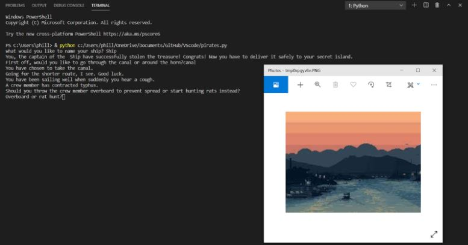

1.1.9 Project: Shamrock Search!

This is our game! the objective is to find the lucky 4 leaf clover amid a field of 3 leaf clovers. When you select the correct shamrock, a yellow circle appears around it to show you've won!
1.2.5 Project: Easter Weekend at the Races!

For this project we chose colorful horses in celebration of Easter. The player gets to bet on one of the horses to win, and if the horse crosses the finish line first they get money! If not, better luck next time pal! When you click the program the colorful horses race around the track.
1.3.1 Project: Mediterranean Mission

This storyboard is pirate themed, where you get to pick your own adventure as you venture through the treacherous seas in your ship. Try to make it to the finish unscathed! Each time you make a decision a new picture appears.